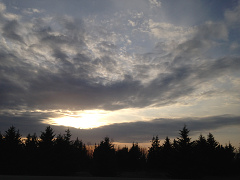
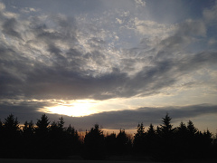
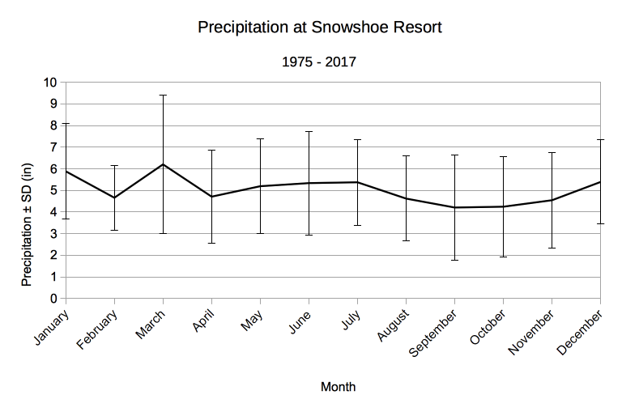

Weather and Climate
 

In general, the weather of the West Virginia mountains is cool and wet. High winds and cold rain can be expected at any time throughout the year. Strong thunderstorms can be expected in spring, summer, or fall. Heavy snow can be expected at any time except the summer months. Roads can be impassable by any motor vehicles in winter.
Current Weather and Forecasts
No current weather data are available specifically for the Glades area (elevation 3400') so conditions must be inferred from nearby stations. Current data are available for the summit of nearby Black Mountain (elevation 4500'), as well as stations at Elkins, Lewisburg, Beckley, and Hot Springs, VA. Only forecasts are available for Richwood and Snowshoe Resort.
The Glades will generally be cooler than most stations. Daytime temperatures may be warmer than Black Mountain or Snowshoe Resort, but the Glades valley bottom will often be noticeably cooler on clear, calm nights due to cold air drainage off the surrounding slopes.
5 miles NNE
Satellite Imagery


Radar Imagery


Spring and fall are the most unpredictable times of the year, so it is essential to check the latest forecasts before any excursion into this area. The Snowshoe, Hot Springs, and Richwood forecasts (above) are probably the best. In the area, a weather radio can be tuned to NOAA's WXM72 at 162.425 MHz to get the latest conditions and forecasts for the nearby Greenbrier River Valley. (At Cranberry Glades, temperatures are likely to be cooler and the chance of precipitation higher.)
Climate
As shown below, temperatures at nearby Snowshoe Resort (elevation 4800 feet, 20 miles northeast of Cranberry) illustrate that summers are quite mild (50-70° F) and only occasionally exceed 80° F. Winter temperatures, of course, can be quite cold, typically around 15-30° F with a record low of -36° F. Only July and August are entirely frost-free. Note that temperatures at Cranberry Glades may be slightly warmer than Snowshoe, as Snowshoe is about 1400 feet higher in elevation and on a more exposed ridgetop.
Typical temperatures (°F) at Snowshoe through the year (Cranberry Glades may be slightly warmer):
| Month | Typically | Record Low | Record High |
|---|---|---|---|
| January | 14 - 29 | -36 | 57 |
| February | 16 - 32 | -20 | 63 |
| March | 24 - 40 | -8 | 76 |
| April | 33 - 51 | 1 | 79 |
| May | 43 - 61 | 19 | 82 |
| June | 52 - 68 | 29 | 82 |
| July | 56 - 71 | 36 | 87 |
| August | 55 - 70 | 33 | 78 |
| September | 49 - 64 | 25 | 79 |
| October | 38 - 53 | 11 | 77 |
| November | 29 - 44 | -4 | 70 |
| December | 19 - 34 | -26 | 64 |
Source: National Centers for Environmental Information
Precipitation is fairly evenly-distributed throughout the year (typically 4-6 inches per month). Spring precipitation is rather variable, while late summer and early fall tend to be slightly drier. Total annual precipitation is about 59 inches. Total snowfall averages over 150 inches per year.

Source: National Centers for Environmental Information
Of course, individual storm systems at any time of the year can deposit several inches of precipitation (in colder weather, a foot or more of snow) and cause significant local flooding. Except during the summer, visitors should expect frost and the occasional wild snowstorm. (That's in addition to the normally expected cold rain.) Many layers of clothing and plenty of good rain gear are essential. Regardless of season, be prepared to get wet.
Other useful climate links:
Next: Flora and Fauna »